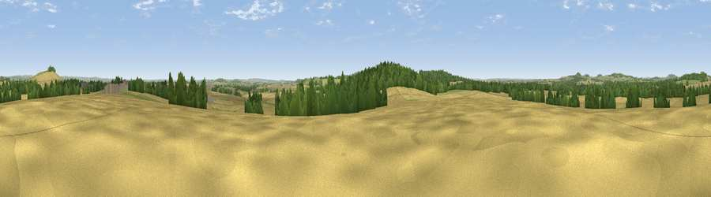

Boar Knoll
#23204 in England · top 28% of its area beats it · near GrateleyWhere it is
The exact computed spot (SU 25309 40376). Click the marker for map links.
The view, rendered

A 360° render of this exact spot computed from the terrain model, tree cover and land cover — summer colours, afternoon light, calibrated against photographs of famous viewpoints. Real trees, hedges and buildings will differ in detail.
The panorama
Grey silhouette: terrain skyline in each direction (720 bearings, Earth curvature and refraction included). Dashed green: skyline with trees (+15 m) and buildings (+8 m) as obstacles. Blue strip: how far the ground is visible on each bearing.
Where the view opens
Wedge length = distance to the farthest visible ground on that bearing (vegetation-aware). Rings at 10, 25 and 50 km.
What fills the view
53% cropland · 24% grassland · 22% woodland ·
Angular shares of the visible panorama (visual magnitude), not map area. Landscape diversity 0.46 (0–1 Shannon).
Key numbers
More beautiful places nearby
The staircase of upgrades: each row has a higher view potential than everything closer. Driving times are estimates from straight-line distance, calibrated against real road routing — check an actual route before setting out.
| Place | Direction | Drive | Score |
|---|---|---|---|
| Viewpoint near Grateley | NNE · 2 km | ~6 min | 61.1 |
| Viewpoint near Cholderton | NW · 6 km | ~13 min | 61.6 |
| Viewpoint near Bulford | WNW · 6 km | ~13 min | 70.3 |
| Viewpoint near Oare | NNW · 24 km | ~40 min | 72.9 |
| Gallows Down | NNE · 25 km | ~40 min | 75.6 |
| Martinsell viewpoint | NNW · 25 km | ~40 min | 77.3 |
| Viewpoint near Berwick St John | WSW · 38 km | ~57 min | 78.2 |
| Viewpoint near Buriton | ESE · 51 km | ~72 min | 80.0 |
51.16208, -1.63944 · source: osm peak · position refined by local search. Computed location — check access rights before visiting.